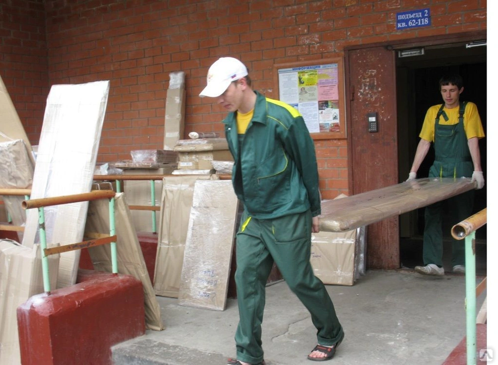

Разнорабочие на дорожные работы
 Услуги грузчиковГрузопогрузочные работы всегда востребованы в любой сфере деятельности человека. Поручать такие работы нужно проверенным и надежным исполнителям, предоставляющих гарантию на производимые работы. Единственным правильным решением будет нанять грузчиков, обладающих соответствующими навыками и умениями. Компания “РазнорабМСК” предлагает услуги грузчиков в Москве по адекватной цене и с обязательной гарантией на качество производимых работ. Основное преимущество - клиент может заказать любое количество грузчиков (от 2 до 100 единовременно). Это актуально для строительных компаний, которым требуется быстро получить в распоряжение работников, способных быстро выполнить перенос груза.
Заказать грузчиковВ Москве и Подмосковье - дело нескольких минут. Для это потребуется набрать указанный номер, написать в онлайн-чат или использовать электронную почту. Всю интересующую информацию предоставит менеджер, что позволяет получить ответы на все поставленные вопросы.
Услуги погрузо-разгрузочных работВыполняются согласно нормам техники безопасности и труда. Перед работой проводится инструктаж и другие мероприятия по подготовке. Почему стоит поручать погрузочно-разгрузочные работы “РазнорабМСК” Обратившись к нам, клиент может рассчитывать на следующее:
- Обеспечиваем сохранность и целостность переносимого груза (относится к хрупким объектам).
- Гарантия своевременной транспортировки, независимо от особенностей поставленного задания.
- Отсутствует доплата со стороны клиента за каждый этаж - не нужно платить, как это требуют другие компании, оказывающие подобные услуги.
- Своевременный перенос груза, что актуально для стройкомпаний. Если требуется быстро доставить строительные материалы на любой этаж объекта, то обращение к нам будет экономически выгодной.
- Возможность заказать грузчиков в Москве по безналичному расчету. Такой подход удобен для юридических лиц.
При необходимости получения профессиональной помощи от грузчиков, которые быстро выполнят доставку строительных материалов в минимальные сроки, нужно только связаться с администратором.
Опытные грузчики от “РазнорабМСК”Постоянный штат сотрудников гарантирует ответственный подход к делу - груз переносится с учетом его особенностей. К примеру, если требуется доставить габаритные строительные материалы (например, гипсокартон), к работе привлекаются необходимое количество грузчиков.
Оформление заказа. Способы оплатыЗаказать грузчиков в Москве и Подмосковье можно у нас. На это понадобиться несколько минут времени, что удобно для разных категорий клиентов. По любым вопросам нужно связаться с менеджером, который ответит на все поставленные вопросы.
Оплатить услуги грузчиковможно наличными или безналичным способом. Кроме этого, время расчета может оговариваться в отдельном порядке (после выполнения поставленного задания).
10.08.2022